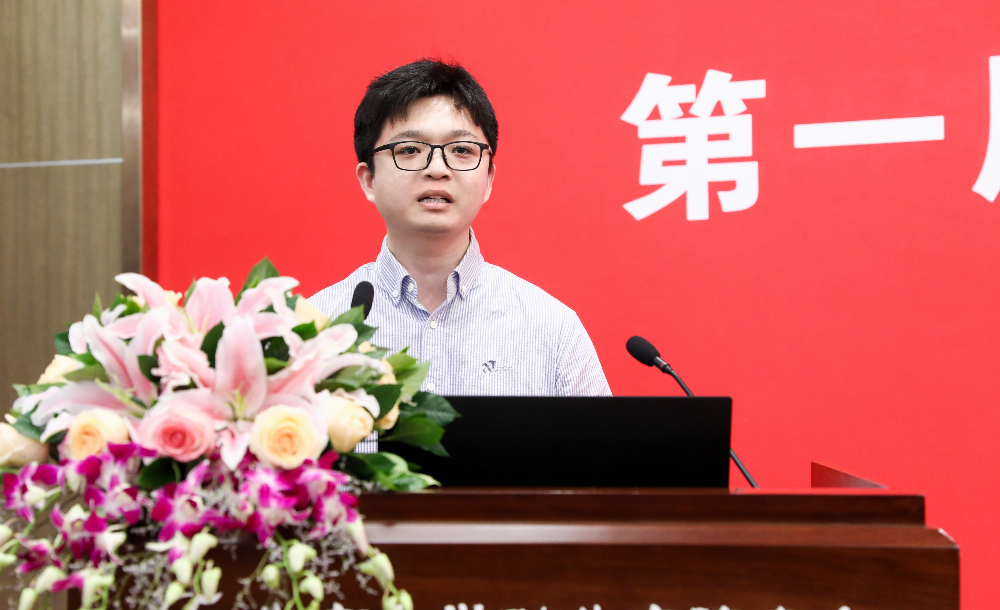

I am a doctoral student at the School of Computer Science, Peking University (PKU). My supervisor is Prof. Zhi Jin and Prof. Ge Li. I expect to graduate in July 2025.
I will join the College of AI at Tsinghua University as an assistant professor in September 2025! I am looking for two PhD students to start in September 2026. Feel free to email me with your resume attached.
My research direction is intelligent software development, including Code Generation and Large Language Models (LLMs) for Code.
Welcome to pay attention to our released LLM - aiXcoder-7B: It surpasses existing LLMs of similar scales in code generation and code completion tasks.